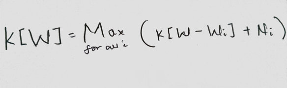
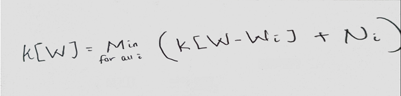
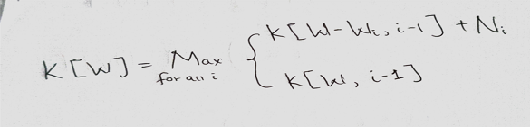
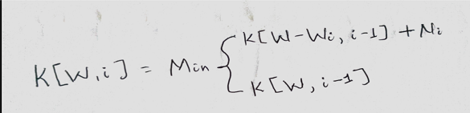
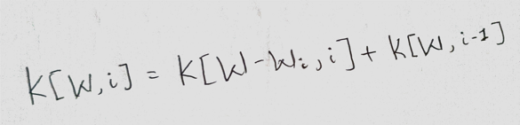
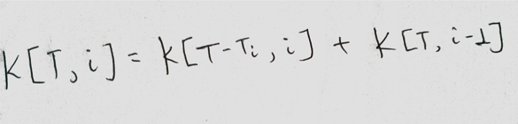
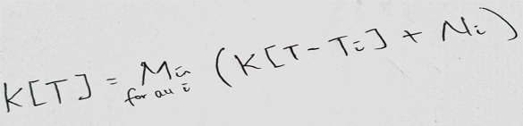
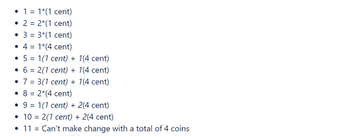
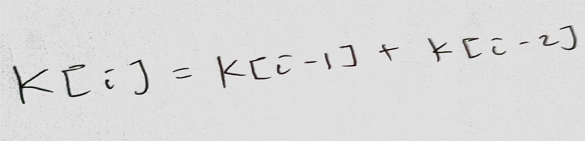

Knapsack problem
Introduction
Given a set A, find all subsets of A? This is the simplest form of what is known as the subset problem. It appears in various form in different problems. It can range from asking something as straightforward as finding all subsets of a set of elements or maybe finding all subsets with a certain target to performing some sort of optimization to the problem. My focus in this blog is going to be in the following types of problems:Given a set A, find all subsets of A? This is the simplest form of what is known as the subset problem. It appears in various form in different problems. It can range from asking something as straightforward as finding all subsets of a set of elements or maybe finding all subsets with a certain target to performing some sort of optimization to the problem. My focus in this blog is going to be in the following types of problems:
- Finding subsets to optimize the value your elements
- Counting the number of subsets that satisfy a certain constraint
In either one of the two cases, the order of the elements of our subsets will not matter. I will explore problems that boil down to one of the two forms of the subset problem. I will use the knapsack problem to explain and provide a recurrence relationship to solve other similar types of problems. In this blog, I assume a certain amount of familiarity in dealing with recurrence relationships and very basic dynamic programming.
Although it may seem like the knapsack problem is mostly applied to a very narrow set of situations, as a problem that fits in the category of subset problems we defined above, its solutions can be applied to a wide range of situations. There are several types of problems that can be reduced to the knapsack problem, or more generally an optimization of a subset problem where the order of the subsets is irrelevant.
What is the Knapsack problem?
The knapsack problem is all about getting the best value out of resources at hand. You’re given a set of resources (gold in this case), and the goal is to find a subset of the resources such that you maximize the value you get out of the resources. If the subset of gold pieces we have maximize the value we get, we don’t care in what order the gold pieces come. Problems of this type are the focus of this blog. Another way to think of such type of problems would be to think of them as a way of utilizing one’s resources with an intent and a target or a constraint to bound the problem. This will be the definition I will be following throughout the rest of the blog. Now there are a lot of things to unpack in the later definition. So, let’s look at the definition more in depth.
First thing we need to look at is the word ‘resources’. In the context of this problem, we can define a resource to be either any physical or abstract object that we can use in some way such as gold or time or a decision/action we can take such as the decision to take one step or two steps on a stair. We can have either a finite or an infinite amount of resources for our problem. So, we need to be able to identify not only the type of resources we have but also the amount of each type of resource we’re using when working on problem. In other words, we need to ask ourselves, ‘does the problem limit the amount of resources we have? Or are we allowed to repeatedly use the same resource?’. We’ll see how this term and others fit practically later when we go through examples.
The second term we need to deconstruct is the term target or constraint. Any knapsack problem will usually involve a target or a bound in which the entire problem is confined in. For example, in the generic example of a knapsack problem, we see that there is a limit to how much gold the knapsack can hold. This limit is what we would consider to be the constraint or the target.
The third term to look at is the word ‘intent’. When working with the knapsack problem, our intent is going to be either one of the following:
- Minimize the value of the way we use our finite resources
- Minimize the value of the way we use our infinite resources
- Maximize the value of the way we use our infinite resources
- Maximize the value of the way we use our finite resources
- Determine in how many ways we can use our resources(finite or infinite)
These five points are just more specific cases of the 2 cases of the subset problem we defined at the beginning of this blog. So, when we are working with any knapsack problem, what we do within the problem will be either one of the five points above. The form that a knapsack problem takes will depend on what our intent is.
This brings us to the last two terms we need to define which are not explicitly in the definition: value and cost. Whenever we want to determine the cost of each resource in a knapsack problem, a good question to ask would be ‘What is the cost of each type of resource with respect to the target or constraint?’ Similarly, to figure out the value of each resource, we ask ourselves ‘What value does each resource have with respect your intent or what you’re trying to achieve?’
Now that we have defined all the necessary terms needed to understand the problem, we will see how these terms fit in a more practical context and formulate recurrence relationships for the five forms of the problem mentioned above by using the knapsack problem.
Problem 1: Stealing gold from a bank
This is, by far, the most famous example of the type of problems we’ll be covering. The general idea of the problem is as follows: Thieves enter a bank holding a knapsack with the intent of taking gold from the bank. However, they soon encounter a problem. Each piece of gold has a weight and a distinct value associated with it. Their goal is get the most value from all the gold they can carry with their knapsack. The knapsack has a maximum weight limit and each piece of gold has a weight and a corresponding value.
A good way to identify weather or not a problem falls under the types of subset problems we’re describing is to see if it is asking us to combine or use the resources that we have (gold in this case) to achieve our goal (maximizing the value gold) or to get to your target (get as close to the weight limit as possible while getting more value). If you’re able to frame your problem this way, then you can solve the problem using one of the five forms of the knapsack problem discussed above. Once you know it falls under the constraints we set above, identify the key terms within the problem:
Resources: our resource is gold here. Our problem will differ depending on weather we have a finite or infinite amount of gold. First, let’s first assume we have in infinite supply of all the available gold. This means we can repeatedly put the same type of gold into our knapsack if we think it will provide us with the optimal solution.
Intent: Maximize the value of gold we put into our knapsack
Target/Constraint: our problem is limited or bounded by the weight that the knapsack can hold. The maximum weight the knapsack can hold will be our target.
Cost: let’s ask ourselves the following question: ‘What is the cost of each gold with respect to the target (weight limit)?’ We can see that the weight of each individual gold item is the cost of the gold items since that will affect the overall available weight limit we have within the knapsack. In other words, the more gold we put into the knapsack the less available space we will have.
Recurrence Relationship
Now let’s try to come up with a recurrence relationship to solve this scenario. It seems like the more pieces of gold we put into the knapsack, the available space decreases. However, since we’re assuming first that we have an infinite supply of gold, the amount of gold we have does not decrease as we keep putting more pieces into our knapsack. So, it seems like the what we are trying to do depends on the amount of available weight we have within the knapsack. So, let’s define our recurrence relationship in terms of the amount of remaining weight ‘W’. Let’s say K[W] is the maximum value we can get if we have an infinite supply of gold and a knapsack of capacity W.
Now that we’ve defined what our problem is, let’s imagine that we’ve put some pieces of gold into our knapsack in an optimal way and we have W amount of weight left. If we are sure that we have put the right types of gold in so far, the next best move to make would be to put in the gold piece that gives us the maximum value. Let’s look at the recurrence relationship below. If we assume that we have an infinite supply of N distinct types of gold:
This is the recurrence relationship that will help us solve this specific situation of the knapsack problem.
We can modify the problem in a different way. Instead of trying to maximize the amount of value the thieves get, if they are not very smart and they want to minimize the value of gold they get then, the recurrence relationship then becomes:
If instead we don’t have an infinite supply of different types of gold, then the situation becomes a bit different. As we put more gold items into our knapsack, not only does the amount of available space decrease, but we can no longer repeat and put the same type of gold we had put into our knapsack earlier. This is because we don’t have an infinite supply of each type of gold. As a result, we need to definite our recurrence relationship in terms of the amount of weight remaining W and also the amount of gold pieces we still haven’t used. Let’s look at the definition of the problem assuming we have a set of gold pieces, N:
K[W, i] this is the maximum value we can get if we have the first i of our gold pieces available and we have a knapsack of capacity W. If we again imagine that we’ve put some distinct pieces of gold into our knapsack in an optimal way and we have W amount of weight left and i pieces of gold left, when we consider the ith gold, we are either going to put that gold in the knapsack if we think it will give us the best value of or we won’t. so the recurrence relationship will then be:
In a similar way, if we want to minimize the value we get under these conditions, the recurrence relationship would be,
Now let’s say the thieves are bored and want to play a game. Instead of trying to maximize or even minimize their gain, they just want to find out in how many ways they can exactly fill the knapsack of weight limit W using the available gold, regardless of weather it is finite or infinite. The recurrence relationship for that is going to be very similar to the one above. We’re first going to define K[W,i] to be the number of ways to fill a knapsack of weight limit W with i types of gold. Assuming you’ve counted the number of ways to fill the knapsack with gold until a certain point optimally and you have i gold pieces left and a weight limit of W, the next option you’ll face is weather the ith gold will help fill the knapsack exactlly or weather the knapsack will have to be filled with the other remaining pieces of gold. We simply then add the two cases to find the total number of ways to fill a knapsack of weight limit W and i pieces of gold.
We can now provide recurrence relationships for the five forms/cases of the knapsack problem we save above.
- Intent 1: Minimize the value of the way we use our finite resources with each resource having a cost of wi and a target of W. the recurrence relationship will then look like the following:
- Intent 2: Minimize the value of the way we use our infinite resources with each resource having a cost of wi, value of Ni and a target of W. the recurrence relationship will then look like the following:
- Intent 3: Maximize the value of the way we use our infinite resources with each resource having a cost of wi, value of Ni and a target of W. the recurrence relationship will then look like the following:
- Intent 4: Maximize the value of the way we use our finite resources with each resource having a cost of w and a target of W. the recurrence relationship will then look like the following:
- Intent 5: Determine in how many ways we can use our resources (finite or infinite) with each resource having a cost of Wi and a target of W.
Now that we’ve formulized a recurrence relationship for all of the five forms of the knapsack problem, all we need to do is first determine if a problem is a knapsack problem, then define the terms discussed in the introduction within the context of the problem followed by identifying which form of the knapsack problem our problem belongs to and then finally use the corresponding recurrence relation accordingly. Up Next, we will see how to do just that with the following examples:
- Coin change problem
- Multiple ways of getting to the end of a stair
- Optimizing studying for an exam
- Cutting a rod problem
- Various scheduling problems
Problem 2: Coin change problem
The coin change problem is not usually one associated with the knapsack problem. I have noticed, however, that there are enough similarities between the two that allows us to solve this problem as a knapsack problem. The coin change problem may come in various forms, but the core idea is the same. Let’s look at a few forms of the coin change problem.
One form of the coin change problem is as follows: Given a set of coin denominations and a target amount of T dollars, in how many ways can you provide change for T dollars using the given coin denominations.
We can see the resemblance of the problem to the way we defined the knapsack problem. Our resource in this problem are the coins and our goal is to determine in how many ways we can use our resource(coins). This is exactly the fifth form of the knapsack problem. Which means we should be able to solve this problem with the following recurrence relationship:
Given a target of W, i resources, and cost of the ith resource being wi. So let’s define each of the terms we’ll need to solve the problem:
- Resources: our resources are the set of coin denominations we have and we have an infinite supply of each.
- Target/Constraint: The target for this problem is ‘T’ dollars since our goal is to provide change for T dollars. Another way to think of it is to imagine T as being the bound to our problem.
- Cost: what is the cost of each resource(coin) with respect to our target (T dollars)? This will be how much each coin is worth. For example, if a coin is 5 cents, the cost will be 5 since the more change we provide, the value of our target decreases linearly proportional to the value of the change we provide.
These three terms are all the things we will need to solve the problem. We have defined a cost for each resource, we know how many types of resources we have, and we know what our target is. So, if we say the cost of the ith resources is Ti, the target is T, and we have a set of S coin denominations, then our recurrence relationship becomes:
Another form of the coin change problem may look as follows: Given a set of coin denominations, and target of T dollars, what is the minimum number of coins needed to provide change to T dollars, assuming there is an infinite supply of each denomination?
We can also see that this is a knapsack problem because we are trying to utilize our resource(coins) in a certain way. To be more specific, we are trying to minimize the value (number of coins) of our resource(coins) when we have an infinite amount of each resource. This looks like the second form of the knapsack problem. So, we can solve this with the following recurrence relationship:
The only new term we need to define for this problem that we didn’t need to for the previous form of the coin change problem is the term ‘value’. To define value, we need to ask ourselves, ‘what is the value of each resource with respect to our intent?’ if our intent is to minimize the number of coins we use to make change, then each coin must have the exact same value.
So, we assume that Ni is the value of each coin, Ti is the cost of ith coin in our set of denominations, T is the target and we have a set of S denominations, then the recurrence relationship for this one becomes:
Exercise: Given a set of S denominations, the maximal coverage is defined as the positive integer right before the first Target value that can’t get any change using the S denominations. The goal is to find the maximal coverage given a set of denominations S.

Problem 3: Stairs Problem
The most basic form of the problem is as follows: If you’re allowed to take either 1 step or 2 steps, in how many ways can you get to the end of an N-step stairway?
This problem can be solved using the same reccurence relationship as finding the nth fibinaci sequence. If you assume that you are at the end, the last step you could have taken may be one step or two steps. Assuming you know in how many ways you could get to the step before the end and the step 2 steps away from the end, the number of ways to get to the end will simply be the sum of the two. More formally, if K[i] if the number of ways you could get to ith step, then
However, the problem with this recurrence relationship is that it breaks down the moment the problem is modified to allow for more steps. To find a more general solution to any form of the problem, let’s try to think of this as a knapsack problem.
The trickiest part might be trying to determine what our resources are. However, we defined resources at the beginning to be “any physical or abstract object that we can use in some way such as gold or time or a decision/action we can take”. So our resources for this problem are the set of steps that we are allowed to take. For our problem, since we can take 1 step or 2 steps any number of times on our way to the end, we have an infinite amount of resources(steps to take). We can frame the problem in a way that resembles the knapsack problem: given a set of steps, in how many ways can you combine these steps to form N steps? If we frame the problem this way, it is obvious that this falls under the 5th form of the knapsack problem. So we can solve it using the following recurrence relation, assuming we can define what the terms “cost”, “Target/Constraint”, and our resources are:
- Resources: our resources here are the steps we are allowed to take - 1 or 2 steps. Since we can take 1 or 2 steps any number of times, we can assume we have an infinite amount of our resources.
- Target/Constraint: our target here is T steps (the number of steps we need to climb)
- Cost: “what is the cost of each resource with respect to our Target?”. The cost must be the value of those steps. For example, if we are taking 2 steps, then the cost would be 2. This is because the most steps we take, the amount we have left decreases by the value of the steps we take.
So, if we assume that we are allowed to take a set of S steps, and we have a T step stairway with the cost of the ith step we can take being Ti. Then the recurrence relation becomes:
Problem 4: How to optimize studying for an exam
Problem: A student is studying for a final exam and has T chapters left to finish. The professor of the class has provided the students with a probability of each chapter appearing on the final exam. However, some chapters are very long and others are not which means the time it takes for the student to study each chapter varies. The student wants to maximize their score on the final exam. What is the best way to study?
We can see that our goal here is to study the chapters(resources) within the time limit(constraint) in such a way that we end up maximizing the likelihood of getting the most possible score on the exam. We can’t study the same chapter again since that would be pointless so this problem looks more like the fourth form of the knapsack problem we discussed above. So, we can solve it with the following recurrence relationship:
Let’s define the terms we will need to solve the recurrence relationship:
- Resources: our resources here are the chapters and we do not have an infinite supply of them since it is pointless to cover the same chapter again.
- Target/Constraint: our constraint here is the overall time we have.
- Cost: when asking the question “what is the cost of each resource with respect to the Target/Constraint?” we can see that the cost should be the time that each chapter is going to take. This is because the more chapters we cover, the less overall time we will have left.
So now that we have defined the terms, we can solve it with the following recurrence relation:
Assuming W is the constraint, Wi is the cost of each chapter, and we are given a set of S chapters to cover for the exam.
Problem 5: Cutting Rod problem
Problem:
Now we can start to see the pattern of all knapsack problems. They all involve some form of optimizing the way we use a resource with a given constraint when there is a cost to using those resources. This problem is no different.
We can immediately notice that the total length of the rod should be the constraint, the length of each cut rod would be the cost of each resource and the value of each resource would be the profit associated with each cut. Also, we can see that we have a finite amount of our cuts since we cant produce infinite amounts of the various types of cuts by cutting up the rod. So, this problem resembles the fourth form of the knapsack problem which we can solve with the following recurrence relation:
Problem 6: Scheduling problems
Scheduling problems may take on different forms. However, most can be solved in a similar way. The question may range from scheduling a meeting for your boss with each meeting having a certain priority and duration, or scheduling jobs where a job has a start and finishing time as well as a profit associated with the job. Regardless of the form it may take, any task scheduling problems can be solved using one of the knapsack problem recurrence relations. Let’s take a look at one problem as an example. The problem is defined as follows: you want to schedule a meeting for your boss. Your boss tells you the priority of each meeting and the time each meeting is supposed to take and asks you to schedule the meetings for him/her. What is the best way to schedule the meetings?
A more explicit and recognizable form of the question is as follows: given a set S of meetings to schedule with a target of T and cost of the ith meeting being Ti and the value of each meeting being their priority, how can you maximize the overall priority of all the scheduled meetings? This can then be solved with the recurrence relation of the fourth form of the knapsack problem:
Notice here that our resources are finite here since we can’t schedule the same meeting again.
Wrapping up
I have tried to show in this blog how the knapsack problem can be generalized and applied to a variety of other problems; problems that are not usually associated with the knapsack problem in many articles, books, or classrooms. I hope this helps in really understanding the importance and magnitude of the knapsack problem and how it can be applied to not just the ones I described above to many other problems.